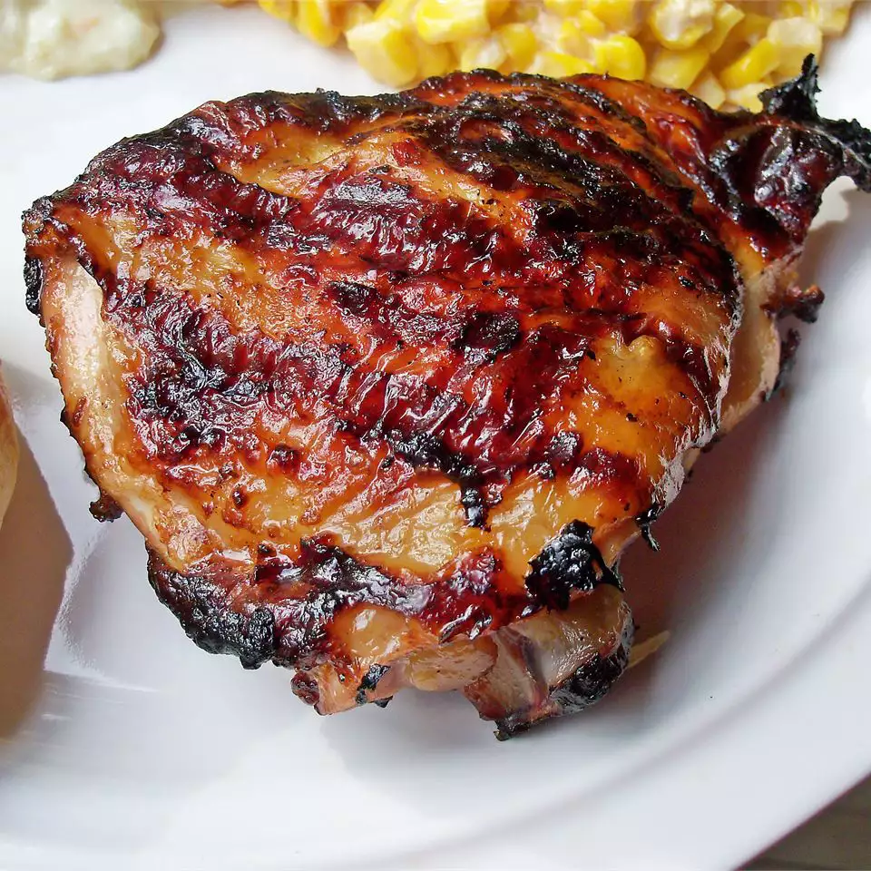

Chicken

This easy Italian dressing marinade for chicken breasts is a simple but delicious way to add flavor before grilling.
Italian Chciken Marinade
Ingredients
- 1 (16 ounce) bottle Italian-style salad dressing
- 1 teaspoon garlic powder
- 1 teaspoon salt
- 4 skinless, boneless chicken breast halves
Directions
- Whisk salad dressing, garlic powder, and salt together in a shallow baking dish; add chicken breasts and turn to coat. Cover the dish with plastic wrap and marinate in the refrigerator, 4 hours to overnight.
- Remove chicken from marinade and shake off excess; discard remaining marinade.
- Preheat an outdoor grill for high heat and lightly oil the grate.